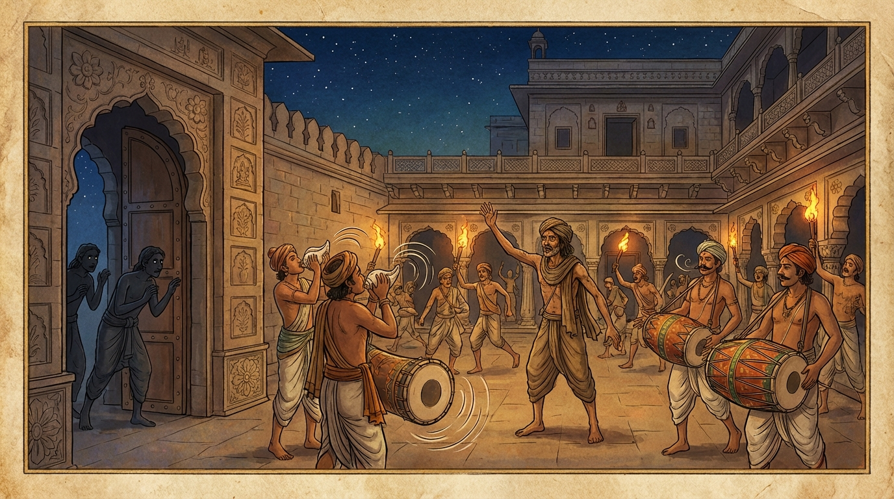

3. කාළකණ්ණි ජාතකය (83)
“මිත්තො හවෙ සත්තපදෙන හොතී” යන මේ ජාතක කතාව බුදුරජාණන් වහන්සේ ජේතවනාරාමයේ වැඩවාසය කරන සමයේ අනේපිඬු මහා සිටුතුමාගේ එක්තරා මිතුරෙකු අරබයා දේශනා කළ සේක. ඔහු සිටුතුමා සමඟ කුඩා කල වැලි කෙළියේ පටන් එකම ආචාර්යවරයෙකු යටතේ ශිල්ප හැදෑරූවෙකි; නමින් ‘කාළකණ්ණි’ විය. කල් යත්ම ඔහු දිළිඳු බවට පත්ව ජීවත් වීමට නොහැකිව සිටුතුමා වෙත පැමිණියේය. සිටුතුමා ඔහු සනසා, ජීවන වියදම් දී, තමාගේ දේපළ රැකබලා ගැනීමේ වගකීම පැවරුවේය. ඔහු සිටුතුමාට උපකාරක අයෙක් වී සියලු කටයුතු කරයි. ඔහු සිටුතුමා වෙත පැමිණි විට සේවකයෝ “සිටුව කාළකණ්ණි, හිඳුව කාළකණ්ණි, කව කාළකණ්ණි” යැයි කියති. එක් දිනක් සිටුතුමාගේ මිත්රාමාත්යයෝ පැමිණ මෙසේ කීහ. “මහා සිටුතුමනි, මොහු ඔබ ළඟ තබා නොගන්න. ‘සිටුව කාළකණ්ණි, හිඳුව කාළකණ්ණි, කව කාළකණ්ණි’ යැයි කියන මේ ශබ්දයෙන් යක්ෂයා පවා පලා යනු ඇත. මොහු ඔබට සමාන අයෙක් නොවේ; දිළිඳුය, විරූපීය. මොහුගෙන් ඔබට ඇති ඵලය කිම?” එවිට අනේපිඬු සිටුතුමා, “නම වනාහි ව්යවහාර මාත්රයකි. පණ්ඩිතයෝ නම පමණක් ප්රමාණ කොට නොගනිති. නම අසා මංගල්ය කරුණු සිතීම (සුතමංගලික වීම) වටින්නේ නැත. නම පමණක් නිසා මාගේ වැලිකෙළියේ පටන් සිටි මිතුරාව අත්හැරිය නොහැක” යැයි පවසා, ඔවුන්ගේ බස් නොපිළිගෙන, දිනක් තමාගේ බෝගම් (ආදායම් ලබන ගම්) බලා යන විට ඔහු ගෙයි ආරක්ෂකයා ලෙස පත්කොට ගියේය.
සොරු “සිටුතුමා බෝගම් බලා ගියේලු, අපි ගෙය කොල්ලකන්නෙමු” යැයි සිතා නොයෙක් ආයුධ ගෙන රාත්රී කාලයේ අවුත් නිවස වට කළහ. කාළකණ්ණි ද සොරුන්ගේ පැමිණීම සැක කරමින් නොනිදාම සිටියේය. ඔහු සොරුන් ආ බව දැන මිනිසුන් පුබුදුවා, “නුඹ සක් පිඹින්න, නුඹ මද්දල වයන්න” යැයි කියමින් මහා සැණකෙළියක් පවත්වන්නාක් මෙන් මුළු නිවසම ඒකනින්නාද කළේය. සොරු “අපට අසන්නට ලැබුණේ ගෙදර කවුරුත් නැත කියා ය, නමුත් මෙහි මහා සිටුතුමා ඇත” යැයි සිතා, ගල් මුගුරු ආදිය එතැනම දමා පලා ගියහ.

පසුදා මිනිස්සු එතැන දමා ගිය ගල් මුගුරු ආදිය දැක සංවේගයට පත්ව, “ඉදින් අද මෙබඳු බුද්ධිමත් ගෘහ පාලකයෙකු නොසිටියේ නම්, සොරුන් කැමති පරිදි ඇතුළු වී මුළු ගෙයම කොල්ලකනු ඇත. මේ කල්යාණ මිත්රයා නිසා සිටුතුමාගේ අභිවෘද්ධිය ඇති විය” යැයි ඔහුට ප්රශංසා කොට, සිටුතුමා බෝගම් සිට පැමිණි කල ඒ සියලු පුවත් දැන්වූහ. එවිට සිටුතුමා ඔවුන්ට මෙසේ කීවේය: “ඔබලා මෙබඳු වූ මාගේ ගෙදර රකින මිතුරා නෙරපා හරින්නට කීවාහුය. ඉදින් ඔබගේ වචනය අසා මා විසින් ඔහු නෙරපනු ලැබුවේ නම්, අද මගේ ධනය කිසිවක් ඉතිරි නොවන්නේය. නම වනාහි ප්රමාණ නොවේ; හිතවත් බවම ප්රමාණ වේ”. ඔහුට වඩ වඩාත් ජීවන වියදම් දී, “මට දැන් කීමට පුවතක් ඇතැ”යි සිතා බුදුරජාණන් වහන්සේ වෙත ගොස් මුල සිට ඒ සියලු පුවත් දැන්වූහ. ශාස්තෘන් වහන්සේ, “ගෘහපතිය, මේ කාළකණ්ණි මිත්රයා තමාගේ මිතුරාගේ ගෙදර දේපළ ආරක්ෂා කරනුයේ දැන් පමණක් නොව, පෙරත් ආරක්ෂා කළේමය” යැයි වදාරා, ඔහු විසින් ආරාධනය කරන ලදුව අතීත කතාව ගෙනහැර දැක්වූ සේක.
අතීතයේ බරණැස් නුවර බ්රහ්මදත්ත රජු රාජ්ය කරන කල්හි බෝධිසත්ත්වයන් වහන්සේ මහා යසස් ඇති සිටුවරයෙක් වූහ. ඔහුට කාළකණ්ණි නම් මිත්රයෙක් විය. සෙසු සියල්ල වර්තමාන කතාව හා සමානය. බෝධිසත්ත්වයෝ බෝගම් සිට අවුත් ඒ පුවත අසා, “ඉදින් මා විසින් ඔබලාගේ වචනය අසා මෙබඳු මිත්රයෙකු නෙරපා හරින ලද්දේ නම්, අද මගේ ධනය කිසිවක් ඉතිරි නොවන්නේය” යැයි කියා මෙම ගාථාව වදාළහ:
“එක්ව පියවර සතක් යාමෙන් මිත්රයෙක් වන්නේය. දොළොස් දිනක් එක්ව විසීමෙන් යහළුවෙක් වන්නේය. මසකින් හෝ අඩ මසකින් ඥාතියෙකු හා සමාන වන්නේය. ඊට වඩා වැඩි කාලයක් එක්ව විසීමෙන් තමා හා සමාන අයෙක් (ප්රාණ සමයෙක්) වන්නේය. එසේ හෙයින්, මම මගේ සැපය උදෙසා, බොහෝ කාලයක් ඇසුරු කළ කාළකණ්ණි නම් යහළුවා කෙසේ අත්හරින්නෙම් ද?”
එහි ‘හවෙ’ යනු නිපාත පදයකි. මෛත්රී කරන්නේ ‘මිත්ර’ නමි; මෛත්රිය සිතෙහි උපදවාගෙන සෙනෙහස පායි යන අර්ථයි. ඒ මේ මිත්රයා ‘සත්තපදෙන හොති’ යනු එක්ව පියවර හතක් ගමන් කළ පමණකින් ඇති වේ යන අර්ථයි. ‘සහායො පන ද්වාදසකෙන හොති’ යනු සියලු කටයුතු එකට කිරීමෙන් හා සියලු ඉරියව්වල සමග සිටින නිසා ‘සහාය’ නම් වේ; මේ සහායකයා දොළොස් දිනක් එකට විසීමෙන් ඇති වේ යන අර්ථයි. ‘මාසඩ්ඪමාසෙන චා’ යනු මසකින් හෝ අඩ මසකින් ‘ඤාති හොති’ හෙවත් ඥාතියෙකු හා සමාන වන්නේය. ‘තතුත්තරි’ යනු ඊටත් වඩා කාලයක් එකට විසීමෙන් ‘අත්තසමොපි හොති’ හෙවත් තමා හා සමාන අයෙක් (ප්රාණ සමයෙක්) වන්නේය. ‘ජහෙය්ය’ යනු මෙබඳු යහළුවකු කෙසේ නම් අත් හරින්නේ ද? යන්නයි. මෙසේ මිතුරුකමේ ගුණ ප්රකාශ කළේය. එතැන් පටන් නැවත කිසිවෙක් ඔහු පිළිබඳව (දොස්) කථා නොකළහ.
බුදුරජාණන් වහන්සේ මෙම ධර්ම දේශනාව ගෙනහැර දක්වා ජාතකය පූර්වාපර සන්ධි ගළපා වදාළ සේක. “එකල කාළකණ්ණි නම් මිතුරා වූයේ ආනන්ද ස්ථවිරයන්ය. බරණැස් සිටුවරයා වූයේ මම ම වෙමි.”
තුන්වන කාළකණ්ණි ජාතක වර්ණනාව නිමි.